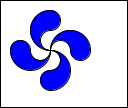

org.codehaus.griffon.jsilhouette.geom
Class Lauburu
java.lang.Object
 org.codehaus.griffon.jsilhouette.geom.Lauburu
org.codehaus.griffon.jsilhouette.geom.Lauburu
- All Implemented Interfaces:
- java.awt.Shape, java.lang.Cloneable, Centered
public class Lauburu
- extends java.lang.Object
- implements java.awt.Shape, java.lang.Cloneable, Centered
Defines a Lauburu shape.

01 package org.codehaus.griffon.jsilhouette.geom;
02
03 import java.awt.Color;
04 import java.awt.Graphics;
05 import java.awt.Graphics2D;
06 import java.awt.Dimension;
07 import java.awt.Rectangle;
08 import java.awt.RenderingHints;
09 import javax.swing.JFrame;
10 import javax.swing.JPanel;
11 import javax.swing.BorderFactory;
12 import javax.swing.SwingUtilities;
13
14 public class LauburuExample {
15 public static JPanel canvas() {
16 return new JPanel() {
17 public void paint( Graphics g ) {
18 Lauburu lauburu = new Lauburu(50, 50, 40, 0);
19 Graphics2D g2d = (Graphics2D) g;
20 g2d.setRenderingHint(
21 RenderingHints.KEY_ANTIALIASING,
22 RenderingHints.VALUE_ANTIALIAS_ON
23 );
24 Rectangle bounds = getBounds();
25 g2d.setBackground(Color.WHITE);
26 g2d.fillRect(bounds.x, bounds.y, bounds.width, bounds.height);
27 g2d.setColor(Color.BLUE);
28 g2d.fill(lauburu);
29 g2d.setColor(Color.BLACK);
30 g2d.draw(lauburu);
31 g2d.drawRect(bounds.x, bounds.y, bounds.width-1, bounds.height-1);
32 }
33 };
34 }
35
36 public static JFrame buildUI() {
37 JFrame frame = new JFrame("Lauburu");
38 frame.getContentPane().add(canvas());
39 frame.setSize(new Dimension(110,130));
40 frame.setDefaultCloseOperation(JFrame.EXIT_ON_CLOSE);
41 return frame;
42 }
43
44 public static void main( String[] args ) {
45 SwingUtilities.invokeLater( new Runnable() {
46 public void run() {
47 buildUI().setVisible(true);
48 }
49 });
50 }
51 } |
|
Constructor Summary |
Lauburu()
|
Lauburu(float cx,
float cy,
float radius)
|
Lauburu(float cx,
float cy,
float radius,
float angle)
|
| Methods inherited from class java.lang.Object |
equals, finalize, getClass, hashCode, notify, notifyAll, toString, wait, wait, wait |
Lauburu
public Lauburu()
Lauburu
public Lauburu(float cx,
float cy,
float radius)
Lauburu
public Lauburu(float cx,
float cy,
float radius,
float angle)
clone
public java.lang.Object clone()
- Overrides:
clone in class java.lang.Object
contains
public boolean contains(double x,
double y)
- Specified by:
contains in interface java.awt.Shape
contains
public boolean contains(double x,
double y,
double w,
double h)
- Specified by:
contains in interface java.awt.Shape
contains
public boolean contains(java.awt.geom.Point2D p)
- Specified by:
contains in interface java.awt.Shape
contains
public boolean contains(java.awt.geom.Rectangle2D r)
- Specified by:
contains in interface java.awt.Shape
getAngle
public float getAngle()
getBounds
public java.awt.Rectangle getBounds()
- Specified by:
getBounds in interface java.awt.Shape
getBounds2D
public java.awt.geom.Rectangle2D getBounds2D()
- Specified by:
getBounds2D in interface java.awt.Shape
getCx
public float getCx()
- Specified by:
getCx in interface Centered
getCy
public float getCy()
- Specified by:
getCy in interface Centered
getPathIterator
public java.awt.geom.PathIterator getPathIterator(java.awt.geom.AffineTransform at)
- Specified by:
getPathIterator in interface java.awt.Shape
getPathIterator
public java.awt.geom.PathIterator getPathIterator(java.awt.geom.AffineTransform at,
double flatness)
- Specified by:
getPathIterator in interface java.awt.Shape
getRadius
public float getRadius()
intersects
public boolean intersects(double x,
double y,
double w,
double h)
- Specified by:
intersects in interface java.awt.Shape
intersects
public boolean intersects(java.awt.geom.Rectangle2D r)
- Specified by:
intersects in interface java.awt.Shape
setAngle
public void setAngle(float angle)
setCx
public void setCx(float cx)
setCy
public void setCy(float cy)
setRadius
public void setRadius(float radius)